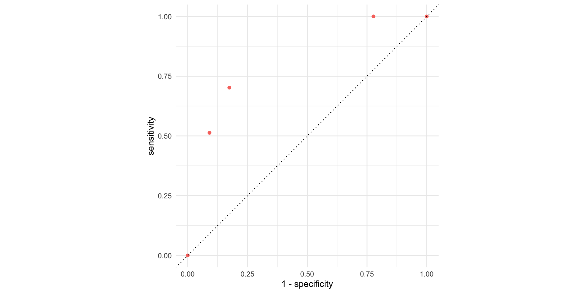
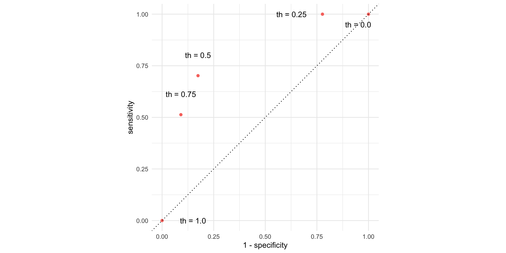
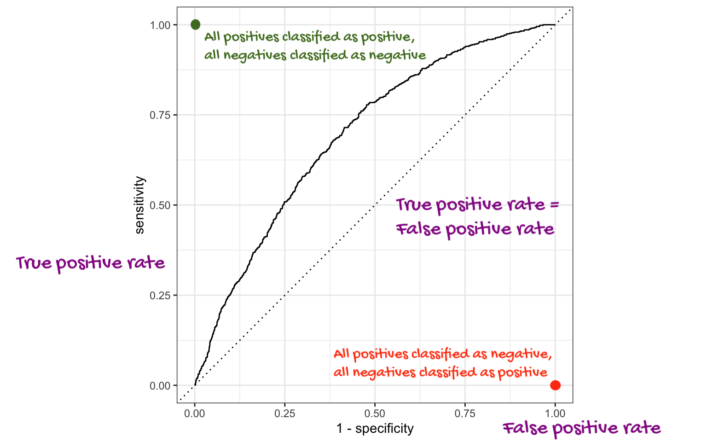
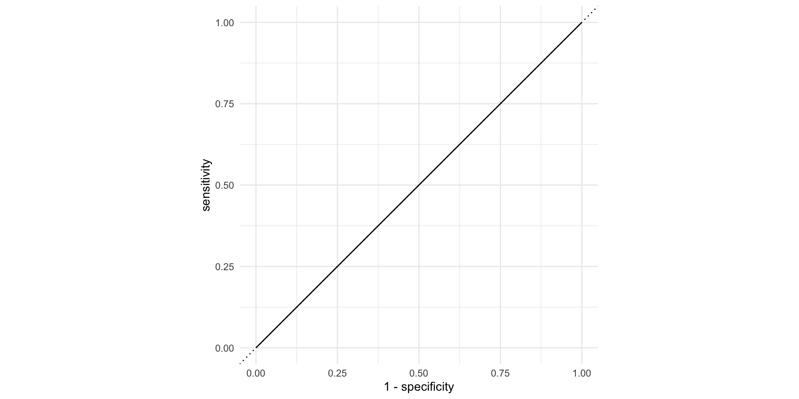

Lab 7
Duke University
STA 199 Spring 2025
2025-03-31
Overview
Lab 7 Overview
Part 1: all things logistic regression
Part 2: a data science assessment survey
Data Science Reasoning Assessment
Data Science Reasoning Assessment
The goal of this data science assessment, to accurately measure introductory data science students’ reasoning skills.
You will be graded based on completion + honest effort. This assessment is not optional. This is meant to be an individual, closed notes assessment.
-
At the end, you will be asked if your anonymized responses can be used to help better improve this assessment.
- Your responses matter!
- The goal of this assessment is to be a national data science reasoning assessment for introductory courses
- This starts with improving questions based on your responses
Logistic regression overview
forested data
7107 rows and 20 columns;
Each observation (row) is a plot of land;
Variables include geographical and meteorological information about each plot, as well as a binary indicator
forested(“Yes” or “No”);Given information about a plot that is easy (and cheap) to collect remotely, can we use a model to predict if a plot is forested without actually visiting it (which could be difficult and costly)?
Goal
Use the data we’ve already seen to predict if a yet-to-be-observed plot of land is forested;
We want a model that does well on data it has never seen before;
“Out-of-sample” predictions on new data are more useful than “in-sample” predictions on old data;
Training versus testing data
To mimic this “out-of-sample” idea, we randomly split the data into two parts:
- training data: this is what the model gets to see when we fit it;
- test data: withheld. We assess how well the trained model can predict on this data it hasn’t seen before.

Randomly split data into training and test sets
By default it’s a 75%/25% training/test split.
The split is random, but we want the results to be reproducible, so we “freeze the random numbers in time” by setting a seed. If we don’t tell you exactly what seed to use on an assignment, you can pick any positive integer you want.
Explore: forested or not

Explore: annual precipitation

FYI: the response variable must be a factor
forested already comes as a factor, so we’re lucky:
FYI: the base level is treated as “failure” (0)
The base level here is “Yes”, so “No” is treated as “success” (1):
Corresponds to this model:
\[ \text{Prob}( \texttt{forested = "No"} ) = \frac{e^{\beta_0+\beta_1 x}}{1 + e^{\beta_0+\beta_1 x}}. \]
This is not a problem, but it means that in order to interpret the output correctly, you need to understand how your factors are leveled.
Fitting a logistic regression model
Similar syntax to linear regression:
forested_precip_fit <- logistic_reg() |>
fit(forested ~ precip_annual, data = forested_train)
tidy(forested_precip_fit)# A tibble: 2 × 5
term estimate std.error statistic p.value
<chr> <dbl> <dbl> <dbl> <dbl>
1 (Intercept) 1.57 0.0557 28.2 6.89e-175
2 precip_annual -0.00190 0.0000602 -31.6 5.98e-219\[ \log\left(\frac{\hat{p}}{1-\hat{p}}\right) = 1.57 - 0.0019 \times precip. \]
Interpreting the intercept
\[ \begin{aligned} \log\left(\frac{\hat{p}}{1-\hat{p}}\right) &= 1.57 - 0.0019 \times precip\\ \frac{\hat{p}}{1-\hat{p}} &= e^{1.57 - 0.0019 \times precip} . \end{aligned} \]
So when \(precip = 0\), the model predicts that the odds of forested = "No" are \(e^{1.57}\approx 4.8\), on average.
Interpreting the slope
At \(precip\):
\[ \frac{\hat{p}}{1-\hat{p}} = {\color{blue}{e^{1.57 - 0.0019 \times precip}}} \]
At \(precip + 1\):
\[ \begin{aligned} \frac{\hat{p}}{1-\hat{p}} &= e^{1.57 - 0.0019 \times (precip + 1)} \\ &= e^{1.57 - 0.0019 \times precip - 0.0019} \\ &= {\color{blue}{e^{1.57 - 0.0019 \times precip}}} \times \color{red}{e^{-0.0019}} \end{aligned} \]
If \(precip\) increases by one unit, the model predicts a decrease in the odds that forested = "No" by a multiplicative factor of \(e^{-0.0019}\approx 0.99\), on average.
Generate predictions for the test data
Augment the test data frame with three new columns on the left that include model predictions (classifications and probabilities) for each row:
# A tibble: 1,777 × 23
.pred_class .pred_Yes .pred_No forested year elevation eastness northness
<fct> <dbl> <dbl> <fct> <dbl> <dbl> <dbl> <dbl>
1 Yes 0.711 0.289 No 2005 164 -84 53
2 Yes 0.968 0.0319 Yes 2003 1031 -49 86
3 Yes 0.992 0.00806 Yes 2005 1330 99 7
4 No 0.266 0.734 No 2014 507 44 -89
5 No 0.263 0.737 No 2014 542 -32 -94
6 No 0.267 0.733 No 2014 759 -2 -99
7 No 0.232 0.768 No 2014 119 0 0
8 No 0.241 0.759 No 2014 419 86 -49
9 No 0.336 0.664 Yes 2014 569 -97 -21
10 No 0.279 0.721 No 2014 340 -54 83
# ℹ 1,767 more rows
# ℹ 15 more variables: roughness <dbl>, tree_no_tree <fct>, dew_temp <dbl>,
# precip_annual <dbl>, temp_annual_mean <dbl>, temp_annual_min <dbl>,
# temp_annual_max <dbl>, temp_january_min <dbl>, vapor_min <dbl>,
# vapor_max <dbl>, canopy_cover <dbl>, lon <dbl>, lat <dbl>, land_type <fct>,
# county <fct>How did the model perform?
These are the four possibilities:

- Our test data have the truth in the
forestedcolumn; - We can compare the predictions in
.pred_classto the true values and see how we did.
Getting the error rates
forested_precip_aug |>
count(forested, .pred_class) |>
group_by(forested) |>
mutate(
p = n / sum(n),
decision = case_when(
forested == "Yes" & .pred_class == "Yes" ~ "sensitivity",
forested == "Yes" & .pred_class == "No" ~ "false negative",
forested == "No" & .pred_class == "Yes" ~ "false positive",
forested == "No" & .pred_class == "No" ~ "specificity",
)
)# A tibble: 4 × 5
# Groups: forested [2]
forested .pred_class n p decision
<fct> <fct> <int> <dbl> <chr>
1 Yes Yes 683 0.702 sensitivity
2 Yes No 290 0.298 false negative
3 No Yes 140 0.174 false positive
4 No No 664 0.826 specificity FYI: the default threshold is 50%
The model produces probabilities:
.pred_Yesand.pred_No;The concrete classifications in the
.pred_classcolumn come from applying a 50% threshold to these probabilities:
\[ \widehat{\texttt{forested}}= \begin{cases} \texttt{"No"} & \texttt{.pred\_Yes} \leq 0.5\\ \texttt{"Yes"} & \texttt{.pred\_Yes} > 0.5. \end{cases} \]
- If you want to override that default, you must do so manually.
Change threshold to 0.00
New threshold > New classifications > New error rates
Change threshold to 0.25
New threshold > New classifications > New error rates
forested_precip_aug |>
mutate(
.pred_class = if_else(.pred_Yes <= 0.25, "No", "Yes")
) |>
count(forested, .pred_class) |>
group_by(forested) |>
mutate(
p = n / sum(n),
)# A tibble: 3 × 4
# Groups: forested [2]
forested .pred_class n p
<fct> <chr> <int> <dbl>
1 Yes Yes 973 1
2 No No 179 0.223
3 No Yes 625 0.777Change threshold to 0.50
New threshold > New classifications > New error rates
forested_precip_aug |>
mutate(
.pred_class = if_else(.pred_Yes <= 0.50, "No", "Yes")
) |>
count(forested, .pred_class) |>
group_by(forested) |>
mutate(
p = n / sum(n),
)# A tibble: 4 × 4
# Groups: forested [2]
forested .pred_class n p
<fct> <chr> <int> <dbl>
1 Yes No 290 0.298
2 Yes Yes 683 0.702
3 No No 664 0.826
4 No Yes 140 0.174Change threshold to 0.75
New threshold > New classifications > New error rates
forested_precip_aug |>
mutate(
.pred_class = if_else(.pred_Yes <= 0.75, "No", "Yes")
) |>
count(forested, .pred_class) |>
group_by(forested) |>
mutate(
p = n / sum(n),
)# A tibble: 4 × 4
# Groups: forested [2]
forested .pred_class n p
<fct> <chr> <int> <dbl>
1 Yes No 474 0.487
2 Yes Yes 499 0.513
3 No No 731 0.909
4 No Yes 73 0.0908Change threshold to 1.00
New threshold > New classifications > New error rates
Picture how errors change with threshold (th)

Picture how errors change with threshold (th)

But that was tedious
Let’s do “all” of the thresholds and connect the dots:
forested_precip_roc <- roc_curve(forested_precip_aug,
truth = forested,
.pred_Yes,
event_level = "first")
forested_precip_roc# A tibble: 1,180 × 3
.threshold specificity sensitivity
<dbl> <dbl> <dbl>
1 -Inf 0 1
2 0.224 0 1
3 0.225 0.00124 1
4 0.228 0.00249 1
5 0.228 0.00498 1
6 0.229 0.00622 1
7 0.229 0.00746 1
8 0.230 0.00995 1
9 0.230 0.0124 1
10 0.231 0.0137 1
# ℹ 1,170 more rowsThe ROC curve
The ROC curve
ROC stands for receiver operating characteristic;
This visualizes the classification accuracy across a range of thresholds;
The more “up and to the left” it is, the better.
We can quantify “up and to the left” with the area under the curve (AUC).
The ROC curve

AUC = 1
This is the best we could possibly do:

AUC = 1 / 2
Don’t waste time fitting a model. Just flip a coin:

AUC = 0
This is the worst we could possibly do:

AUC for the model we fit
# A tibble: 1 × 3
.metric .estimator .estimate
<chr> <chr> <dbl>
1 roc_auc binary 0.879Not bad!
The area under the ROC curve
This is a “quality score” for a logistic regression model;
When you compute it for a test data set that you set aside, the AUC is a measure of out-of-sample prediction accuracy;
AUC is a number between 0 and 1, where 0 is awful and 1 is great, similar to \(R^2\) for linear regression.
The function
roc_auccomputes it for you, and it takes the same set of arguments asroc_curve.
New commands introduced last week
logistic_regaugmentroc_curveroc_aucset.seed-
initial_split,training,test geom_path
You will use them all on Lab 7, and they should go on your Midterm 2 cheat sheet.